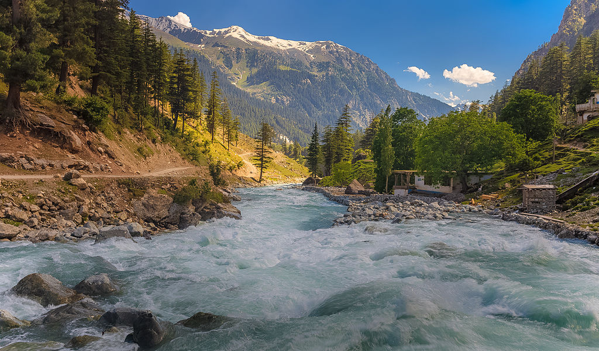
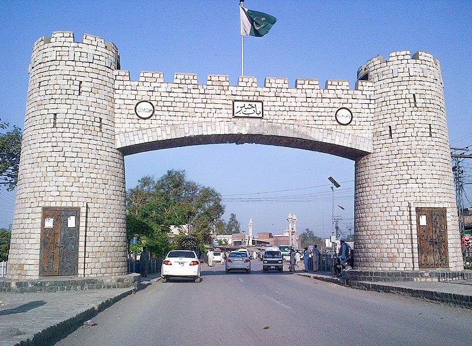
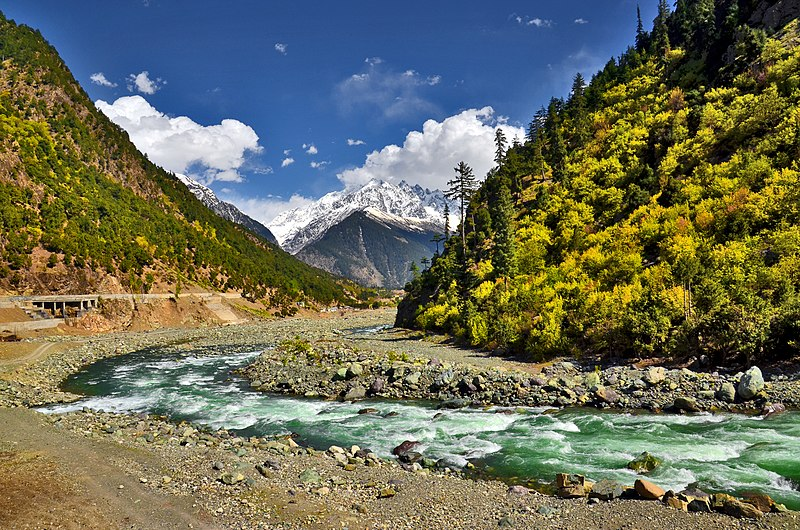
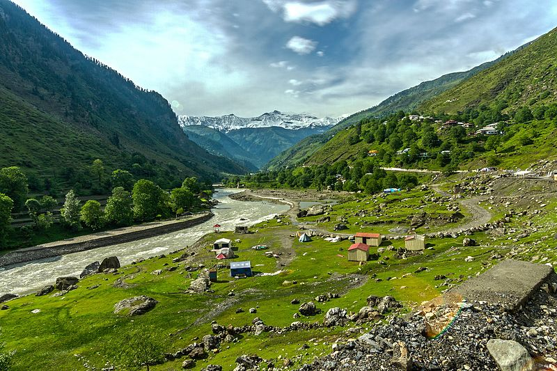

Khyber Pakhtunkhwa (/ˌkaɪbər pəkˈtuːŋkwə/; Pashto: خېبر پښتونخوا; Hindko/Urdu: خیبر پختونخوا),[4] commonly abbreviated as KP or KPK, is one of the four provinces of Pakistan. It is located in the northwestern region of the country, along the Afghanistan–Pakistan border, and the city of Peshawar serves as its capital.
While it is the third-largest Pakistani province in terms of both its population and its economy, it is geographically the smallest.[5] The province is home to 17.9 percent of Pakistan's total population, with the majority of its inhabitants being Pashtuns and Hindkowans. Within Pakistan, Khyber Pakhtunkhwa borders Punjab, Balochistan, the Islamabad Capital Territory, and the Pakistani-administered territories of Gilgit–Baltistan and Azad Jammu and Kashmir.
Once a stronghold of Buddhism, Khyber Pakhtunkhwa is the site of the ancient region of Gandhara, including the ruins of the Gandharan capital of Pushkalavati (located near modern-day Charsadda). The region's history is characterized by frequent invasions by various empires, largely due to its geographical proximity to the historically important Khyber Pass.[6]
   